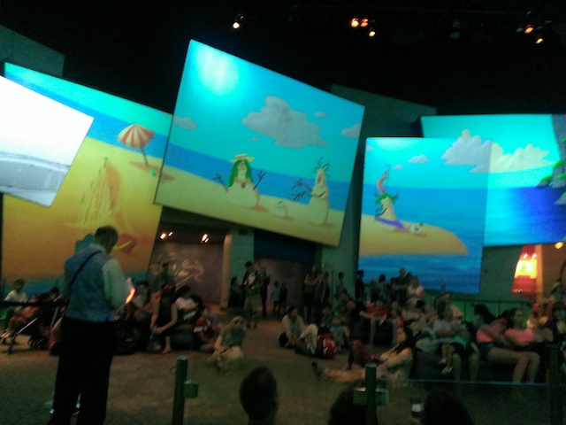

| |
Disneyland Summer 2015
 All right. Time for another update. You may be wondering why the hell I am at Disneyland. Well, I certainly wasn't expecting to be here and yeah. This is one of those moments where I said "I was NOT expecting to be here today." Basically, to put a long story short, Alex, a friend of mine who I haven't seen since 2013 was heading down to Disneyland and really wanted me to come. I initially told him that I can't afford it because yeah. I'm in financial lockdown and things are TIGHT right now. But he really wanted me to go and was willing to GREATLY help me out and pay for my ticket. And yeah, if you're going to that much trouble, I can't turn it down, or thank you enough. Again, thank you to Alex and his family for everything. I REALLY appreciate it. So, here I am. And for some reason, they led me to park over here.
All right. Time for another update. You may be wondering why the hell I am at Disneyland. Well, I certainly wasn't expecting to be here and yeah. This is one of those moments where I said "I was NOT expecting to be here today." Basically, to put a long story short, Alex, a friend of mine who I haven't seen since 2013 was heading down to Disneyland and really wanted me to come. I initially told him that I can't afford it because yeah. I'm in financial lockdown and things are TIGHT right now. But he really wanted me to go and was willing to GREATLY help me out and pay for my ticket. And yeah, if you're going to that much trouble, I can't turn it down, or thank you enough. Again, thank you to Alex and his family for everything. I REALLY appreciate it. So, here I am. And for some reason, they led me to park over here.
Oh, and in case you've been living under a rock, Disneyland is celebrating its 60th Anniversary with diamonds and other shiny glittery crap. Ooh. Pretty.
Well, we're here. Let's make this count for everything.
First things first, California Screamin, which as usual, is running great.
Tornado Concert themed Chairswings > Orange themed Chairswings.
And luckily, I recieved a Fastpass for Radiator Springs Racers while I was stuck in traffic. Again, I really appreciate this. Thank you.
Oh look. More traffic. It's just like the drive down all over again.
 "Hey. We may be the worst Non-Sequel Pixar Movie. But can any other Pixar Movie claim to have a dark ride like this!?"
"Hey. We may be the worst Non-Sequel Pixar Movie. But can any other Pixar Movie claim to have a dark ride like this!?"
 As long as more rides with Test Track technology are coming out soon, then I'm happy.
As long as more rides with Test Track technology are coming out soon, then I'm happy.
 Is it me or is this fountain new? I certainly don't remember it from last December. Either way, I like it.
Is it me or is this fountain new? I certainly don't remember it from last December. Either way, I like it.
Ooh. New paint job for Soaring Over California. I must say. I like it.
Goofy's Sky School. Still lagging behind nearly every other Wild Mouse out in the world.
Well, that was some fun in California Adventure. Time to move on to Disneyland.
Hey. I'm always down for some fun on Pirates of the Carribean.
"Yikes. When I said that the 1% assholes who run this place were walking skeletons, I didn't mean it literally."
No need to convince the dog for the keys. You'll get out and a Grand Jury will refuse to indict you.
"If I can't ride up top and ring the bell, then it's not worth riding the Columbia Steamboat at all!!"
I technically can't judge since I haven't seen the movie, but I have LOW expectations for Tomorrowland. That thing looks AWFUL!!!

All right. Let's head over to DCA, ride Tower of Terror, and have some fun in the Animations Studio.
"We're happy to stopped by to take this quiz that while was impressive when the park first opened in 2001, now just seems like something I can do on Buzzfeed to waste time, be lazy, and procrastinate on things I should be working on.
 "NO!! We will NOT allow you to SING in that pathetic excuse you have of a voice."
"NO!! We will NOT allow you to SING in that pathetic excuse you have of a voice."
Time to head on back over to Disneyland. We have some fastpasses to redeem.
Hey Alex! Thunder Mtn opened back up and it's been a while for you.
 Ahh. The 3rd lifthills going to blow. Where's Dynamite Goat when you need him?
Ahh. The 3rd lifthills going to blow. Where's Dynamite Goat when you need him?
Oh, and for those going to Disneyland anytime soon, Selfie Sticks are banned on the rides. THANK GOD!!! Now, I may be a POV Friendly guy and support the idea of cameras on coasters as long as you're being smart. But Selfie Sticks on coasters? NO!!! F*CK NO!!! I HATE Selfie Sticks and the vapid shallow self-absorbed idiots using them. No seriously. I can't think of ANY reason to use a Selfie Stick. I'm not even a big fan of regular selfies, only taking them if there's a photo of myself I really want but am either all alone, feeling particuarlly shy, or don't want to let my phone touch the slimy theiving hands of any of the assholes around (LESSON LEARNED!!!), only then will I take a selfie, provided there's a F*CKING REASON (Note: Standing in front of your bathroom mirror for no reason is NOT A REASON!!!). But Selfie Sticks? NO!! NO REASON!!! Now imagine one of these things on a roller coaster being used by a dumbass who can't control it and will likely hurt someone with it? NO!! BAN THEM!!! Happy to hear that Disney is enforcing this rule. BAN SELFIE STICKS!!!
Aww. Won't be able to fly today. So sad.
I can think of a lot more people that need to join that line to hell.
Ooh. Look at all that Disney Magic. =)
 Yeah. Matterhorn had a lot of changes done to it. Not a fan of most of it, but I do like the crashed Bobsled.
Yeah. Matterhorn had a lot of changes done to it. Not a fan of most of it, but I do like the crashed Bobsled.
Note. If you want to get on a lot and have a full day at Disneyland, be smart and take advantage of things like Fastpass and Single Rider Lines. A word of advice from Incrediblecoasters.
Am I the only one disturbed at the sight of a Tea Party Flag in Frontierland? Ok, as of writing this caption and doing some research out of seeing the flag and going "WTF?", The Gadsden Flag, now the Tea Party Flag was actually a symbol during the American Revolution, so I can see why Disney put it up. As theming to make it seem more authentic and try take you back to the 1800s. Unfortunetly, with the negative connotations that flag has today, I'd still recommend getting rid of it just because I had a negative knee-jerk reaction to it, and I'm guessing I'm not the only one who thought that and didn't bother to do their homework on the flag.
Quick Haunted Mansion story. There was a new animatronic on the ride. I didn't think much of it, but according to Alex, that new ghost, known as the Hat Box Ghost, was originally supposed to be there, but they couldn't get it to work, so they removed it. Well they recently put him back in to the joy of Alex and all my other Disney-obsessed friends. Hey, I'm happy with him. He's a cool anamatronic. =)
Well, I can safely say that the Fireworks for the 60th Anniversary were good. As always.
Love getting on Splash Mountain at night when everybody else is at the shows.
 And finally, we end the day with a showing of Fantasmic. Still one of my favorite theme park shows. It was a great day and again, I have to thank Alex for anything. =)
And finally, we end the day with a showing of Fantasmic. Still one of my favorite theme park shows. It was a great day and again, I have to thank Alex for anything. =)
Home
|